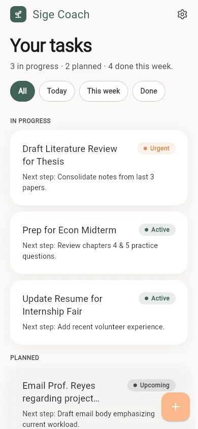
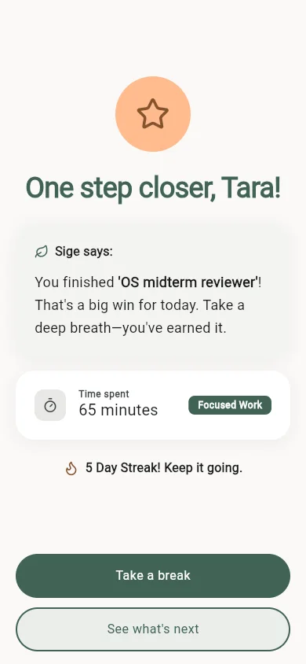

Sige
A mobile accountability coach that turns conversational guidance into a focused view of next actions.
- Role
- Individual project · Mobile development
- Built with
- Flutter · Supabase · FastAPI · Groq · FCM
Project walkthrough

Problem
Connect a coaching conversation to practical follow-through without presenting unfinished product surfaces as shipped features.
A Flutter client uses Supabase and a FastAPI service to support the coaching conversation, with Groq generating responses and FCM available for notification delivery.
My contribution
Designed and built the Flutter coaching experience and its service-backed chat integration; designed Tasks and Insights as clearly labeled interface prototypes.
Ownership boundary. Solo project designed and implemented by Jayrald.
Public solo repository. The chat integration is implemented; Tasks and Insights are presented as UI prototypes, not completed live features.
How it works
-
Flutter client
Collects a message or quick reply in the coaching conversation.
-
FastAPI service
Receives the request and coordinates the service-backed response flow.
-
Groq integration
Generates the coaching response returned to the active conversation.
-
Accountability surfaces
Tasks and Insights demonstrate the intended follow-through as labeled UI prototypes.
Engineering choices
| Decision | Why | Tradeoff |
|---|---|---|
| Keep the coaching exchange inside the active conversation. | Quick replies and generated responses need immediate context to feel actionable rather than detached. | The usefulness of the experience depends on service availability and careful response handling. |
| Label Tasks and Insights as UI prototypes. | Their interface direction can be shown without implying that unfinished service behavior is live. | The demonstration is intentionally narrower than the planned product surface. |
In use
Tasks UI prototype captured from the Flutter project. This locally isolated sequence demonstrates the intended task list, detail, and completion states; it is not connected to a live task backend.
-
Tasks prototype
Tasks UI prototype: the list organizes next actions by status and exposes the next concrete step for each item. -
Task detail

Open the prototype detail: rationale, schedule, and completion action are composed as one focused accountability surface. -
Completion state

Mark the prototype task done: the completion state acknowledges progress, records focused time, and offers a clear next step.
Outcome
The Tasks interface prototype demonstrates a path from a planned action to its detail view and completion state.
Evidence. The captured sequence opens a task, shows its rationale and schedule, and marks it done in the prototype.
Current limits. Tasks and Insights remain UI prototypes. This walkthrough is not connected to a live task backend and does not demonstrate the separate chat integration or establish behavior change.